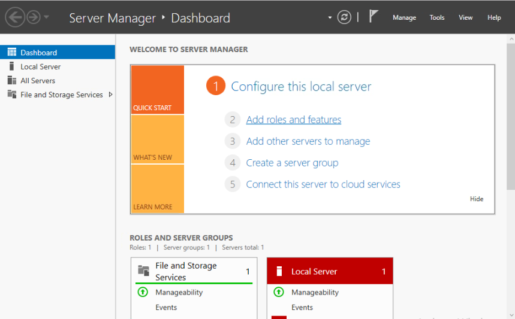

Welcome to this training. Over the next 3 days, you will learn how to access and configure Product ABC. Your instructor will guide you through a series of possible integrations. To receive credit for this course, you must complete all the exercises available at the end of this manual. This course is a pre-requisite to Advanced Product ABC.
Note: Your lab environment for this course is available through Course Manager by Skytap. Instructions on how to access and interact with your Skytap lab environment are available on the Resources tab. Additional information is available on the Skytap Help Site.
Please watch this video before you begin the course.
Before you proceed, please make sure you complete the required reading below:
To log in to the application:
Note: If the log in fails, please try again making sure you have typed in your credentials correctly.
The Management Page will display:

Once you have logged in, you can move on to configuring the application.
Various configuration options are available.
| Configuration |
Setting | Value |
|---|---|---|
| Option A | Setting A | true/false |
| Option B | Setting B | 1-100 |
| Option C | Setting C | yes/no |
To configure the application, click the green Configure button on the top left. Modify the necessary settings and hit Save.
Take some time to review the available settings and configuration options. Once you are ready, you may begin the exercise on the next page.
To complete this exercise, you will need the following:
Disable Configuration Option A.
Warning! Any unsaved changes may be lost.
Launch the command line interface and enter the following commands:
prodabc -c -f xyz
Followed by:
enable a
Return to the management page and click on Generate report. Download and save the generated report.
To complete this exercise, you will need the following:
Set Configuration Option C to 'No' and Option B to 100.
Launch the command line interface and enter the following:
abc enabled?
What is the result?
Now set Configuration Option B to 0. Retype the command in the CLI and log your results.
If you need a little help with this exercise, review page 22 of the Product ABC Training Manual (link available on page 1). It contains a description of a very similar exercise.
This section lets you try the commands feature.
Try opening this file inside the VM:
Next, we'll try launching the calculator in the VM:
Create a text file on the desktop. When you're done, click below to check your work:
Heads up! You must complete both exercises to get credit for this course.
Please follow the steps below to wrap up your training.
Note: If you require additional time to complete your exercises, please contact your instructor.
Thank you for taking our course. Please consider filling out the Student Survey.
For a list of other available courses, please go to our website: ACME Software Training